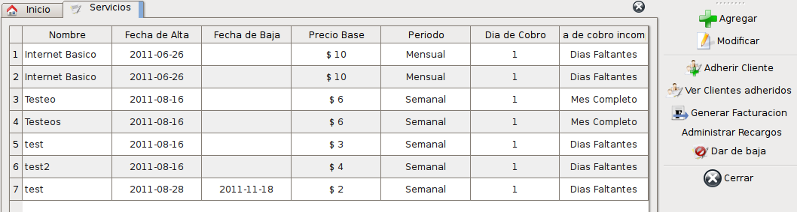
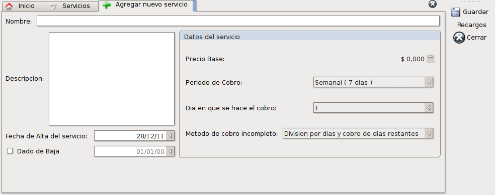
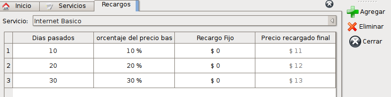
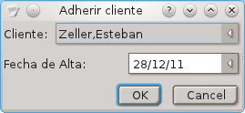
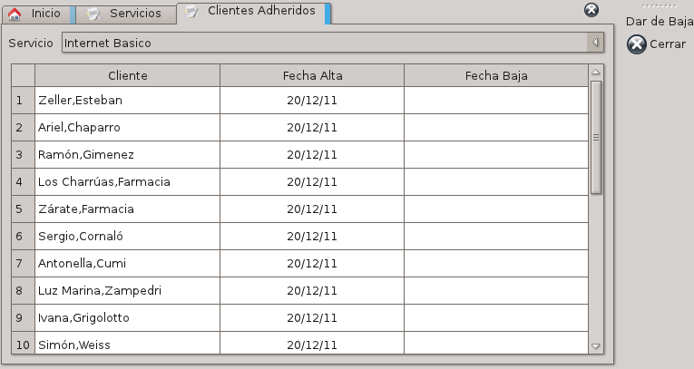
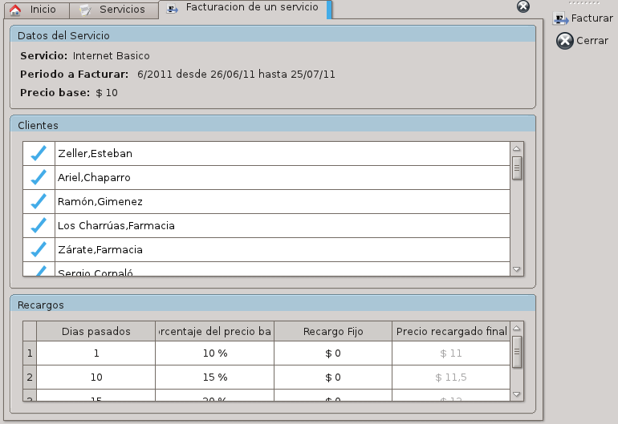
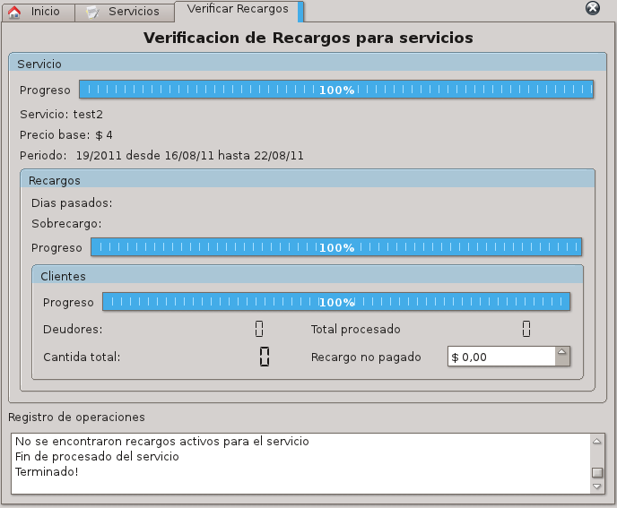

El módulo de servicios le permite administrar, facturar y contabilizar los datos necesarios para facturar un servicio basado en un cobro mensual fijo.
Cada servicio posee las siguientes características:
- Un servicio especifico puede tener asociado uno o varios recargos por pago fuera de término. No se considera la posibilidad de un recargo para todos los servicios.
- Un servicio puede tener muchos clientes afiliados o adheridos al servicio.
- Un cliente puede estar adherido a varios servicios simultáneamente.
- Un servicio tiene un precio base y sobre ese precio cada recargo aplicará un porcentaje de recargo desde el precio base, o una cantidad de dinero fija que se agregará al precio base cuando se cobre el servicio luego de las fechas predeterminadas.
Para comenzar vamos a definir un servicio y todas sus partes a modo de ejemplo.
Servicios
Para ver los servicios que se encuentran activos podemos ingresar a través del menú Servicios -> Servicios. O a través de la pantalla inicial, con su correspondiente botón.
Al acceder verá una lista como la siguiente:

Dentro de esta lista estarán definidos todos los datos básicos del servicio y tendrá a disposición las acciones que se listan a continuación con sus correspondientes explicaciones.
- Agregar: Agrega un nuevo servicio desde cero.
- Modificar: Modifica un servicio seleccionado de la lista.
- Adherir cliente: Adhiere un cliente nuevo al servicio seleccionado.
- Ver clientes adheridos: Muestra un listado con lo clientes que están adheridos al servicio seleccionado.
- Generar Facturación: Genera la facturación mensual del servicio seleccionado.
- Administrar recargos: Administra los recargos del servicio seleccionado.
- Dar de baja: Da de baja el servicio seleccionado.
Agregar servicio
Al seleccionar esta opción se abrirá una ventana como la siguiente donde se podrá insertar todos los datos del servicio.

Los datos a completar son los siguientes:
- Nombre del servicio: Este es el nombre que aparecerá como identificador del servicio, tanto en el programa con en la facturación realizada en todos los periodos.
- Descripción: se describe cual es el alcance del servicio prestado.
- Fecha de alta del servicio: Inicio de la prestación del servicio. Se aconseja que coincida con el inicio del tipo de periodo elegido mas adelante para simplificar el uso. Por ejemplo, si elije un cobro mensual, ingrese como fecha de inicio, el primer día del mes actual.
- Precio base: Precio básico del servicio. Es el precio que pagará el cliente si realiza el abono a término.
- Período de cobro: Elige la cantidad de días que hay entre cada cobro del servicio. Pueden ser cualquiera de los siguientes:
- Semanal: 7 días.
- Quincenal: 14 días.
- Mensual: 28-31 días.
- Bi-Mensual: 2 meses.
- Trimestral: 3 meses.
- Cuatrimestral: 4 meses.
- Semestral: 6 meses.
- Anual: un año calendario.
- Día de cobro: Define el día en que se empieza a abrir el cobro del servicio. Este parámetro se toma como base para conocer el día desde donde se empiezan a considerar el momento del período en que se calcula el recargo. Véase recargos.
- Método de cobro incompleto: Define la forma en que se le cobrará a un cliente si se da de alta fuera del período de inicio del servicio. Pueden ser cualquiera de las siguientes opciones:
- División por días y cobro de días restantes: Se divide el precio del servicio por la cantidad de días que tiene el periodo del mismo. Este valor se lo multiplica por la cantidad de días que hay entre la fecha que se dio de alta el nuevo cliente y el próximo inicio del periodo. Este valor será el que se le facture en el primer mes.
- Período completo: Sin importar el día en que el cliente se de de alta en el servicio, se cobra el período completo en el cual el cliente se dio de alta.
Luego de elegir y completar todos los datos requeridos, utilizamos la acción de Guardar para dar de alta el servicio.
Esto nos habilitará para que se puedan generar los recargos, asociarle los clientes que tendrá y generar su facturación.
Recargos
Los recargos nos permiten definir un precio diferencial para cuando el cliente paga la facturación de un servicio fuera de la fecha definida como límite.
Para configurar los recargos que tendrá un servicio, seleccionamos el servicio al cual deseamos configurar los recargos y utilizamos la acción Recargos.
Esto nos brindará una ventana como la siguiente:

En esta veremos una lista de los recargos que hay actualmente para el servicio.
El campo de Días pasados indica la cantidad de días desde el día de cobro definidos en el servicio que tienen que pasar para que se empiece a aplicar el recargo definido en esa fila. El recargo se aplicará hasta la cantidad siguiente de días que haya en la siguiente fila, o indefinidamente si no hay mas filas.
Por ejemplo, un servicio mensual dado de alta el día 01/03/2011, con día de inicio de cobro en el día 1, que tiene como recargos los mostrados en la figura, implica que el día 10/03 se empieza a cobrar el precio recargado final. Este precio recargado final se cobra hasta el día 20/03 donde empieza a cobrarse con el recargo de la segunda fila. Luego del día 30/03 se considera que sin importar la fecha que se pague el servicio, se hará un recargo del 30%.
Cada recargo tiene dos formas distintas de aplicar un extra al precio base:
- Porcentaje del precio base: Se calcula como el precio base más el xx% del precio base para calcular el recargo.
- Recargo Fijo: Se calcula como el precio base más la cantidad ingresada.
Si se desea utilizar el recargo fijo, se debe dejar en 0 el porcentaje y viceversa.
En cualquiera de los dos casos, la columna Precio recargado final indicará cual es la cantidad que el cliente pagará en cada recargo.
Atención: La cantidad de días recargados no se acumulan de arriba hacia abajo. Como se vio en el ejemplo, cada fila calcula su fecha de inicio como la fecha de inicio del periodo asignado al servicio más el día de inicio de cobro más la cantidad de días para el recargo.
Para Agregar un recargo haga click en la opción Agregar.
Esto insertará una nueva fila al final de el listado.
Para editar los datos de cada fila, seleccione la celda que desea editar y presione la tecla F2, o haga doble click.
En la cantidad de días pasados se podrá editar mediante una lista desplegable que tendrá los números del 1 al 31. Seleccione el número que desea y presione la tecla Enter.
En la columna de Porcentaje de recargo, ingrese el número deseado por el teclado o utilice las flechas de arriba/abajo para colocar el valor deseado. Para guardar el cambio presione la tecla Enter.
En la columna de Recargo fijo, ingrese el valor deseado sin el símbolo $. Nuevamente para guardar el cambio presione la tecla Enter.
Una vez agregados y modificados todos los recargos necesarios simplemente cerramos la ventana.
Sobre la lista de recargos existe una lista desplegable que contiene todos los servicios que están dados de alta en su sistema. Si selecciona alguno de ellos, se cargarán los recargos correspondientes al servicio elegido automáticamente.
Eliminar un recargo: Para eliminar un recargo, selecciónelo y elija la opción “Eliminar”. Este proceso es irreversible. Los recargos ya hechos sobre este ítem seguirán existiendo pero no podrá recuperarlos.
Adherir clientes
Una vez definidos los recargos que tendrá el servicio, vamos a adherir a los clientes que utilizan este servicio.
En la lista de servicios, seleccionamos el servicio al cual deseamos adherir un cliente y utilizamos la acción “Adherir cliente”.
Esto nos abrirá un dialogo como el siguiente:

En la lista desplegable estarán todos los clientes que usted posee en su listado de cliente, exceptuando aquellos que ya han sido dados de alta en el servicio elegido. Seleccione de allí el cliente elegido.
El segundo parámetro es la fecha de alta. Este dato define como se cobrará el primer mes de servicio, ya que depende de lo definido por la forma de pago incompleto definida en el servicio seleccionado. Según la fecha de alta se aplicará el método elegido y se le cobrará lo correspondiente.
Para adherir el cliente al servicio presione “Aceptar”. Esto creará la relación del cliente al servicio y permitirá realizar las cobranzas en cada período.
Si el cliente no posee una cuenta corriente, se creará le creará una con los parámetros predeterminados definidos en la sección de preferencias y se lo comunicará a usted con un diálogo de aviso.
Además se cobrará el primer período según el método elegido en la definición de forma de cobro incompleto.
Lista de cliente adheridos a un servicio
Para conocer la lista de clientes que ya se encuentran adheridos a un servicio, seleccione el servicio deseado y utilice la opción “Clientes adheridos”.
Esto mostrará una lista como la vista a continuación:

Nuevamente vemos la lista de desplegable que muestra todos los servicios, del cual podemos elegir alguno para obtener la lista de clientes adheridos. Nuevamente aparece la lista desplegable mostrando todos los servicios. De ella se puede seleccionar alguno para obtener la lista de clientes adheridos. (fijate si queda mejor)
Cada ítem contiene la razón social del cliente, fecha en que se dio de alta al servicio, si se dio de baja y en que fecha.
En esta ventana podemos eliminar la adhesión de un cliente a un servicio utilizando la opción “dar de baja”. Al realizar la acción se guardará la fecha y la hora en que se dio de baja el cliente del servicio y aparecerá en el listado proporcionado.
Además se verificará que no existan deudas correspondientes al servicio en cuestión. Si existieran no se podrá dar de baja el cliente y se mostrará el cartel explicativo para tal caso.
Si no hay deudas, se dará de baja y no se tendrá en cuenta en futuras facturaciones del servicio.
Generar Facturación de un Servicio
Para generar la facturación de los servicios cada mes, desde el listado de servicios seleccionamos el servicio del cual queremos generar la facturación y utilizamos la acción “Generar Facturación”.
Esto nos abrirá una ventana como la mostrada a continuación:

Dentro de esta ventana se pueden ver 3 grupos de información:
Datos del servicio
Contiene la información del servicio que se va a facturar. Mostrará el nombre del servicio, el número de período que se facturará y el número de períodos en un año. Se indicará también la fecha de inicio del período y la fecha de fin. Se incluye también como referencia el precio base del servicio.
Clientes adheridos
Se muestra todos los clientes adheridos al servicio que están en condiciones de generar su facturación. Esta lista le da la posibilidad de no facturar clientes específicos en este lote. Esto se puede lograr haciendo doble click sobre la tilde azul que acompaña a cada cliente. Esto abrirá una casilla desplegable que se podrá activar o desactivar. Para guardar esta preferencia presione la tecla Enter.
Recargos
Esta lista mostrará todos los recargos que posee el servicio y sus datos.
Facturar
Para realizar la facturación del servicio, utilice la acción “Facturar”.
El proceso se iniciará y se guardarán todos los datos correspondientes a la facturación.
Usted podrá seguir el desarrollo de la facturación con una nueva sección que aparecerá debajo de recargos. Dicha sección junto con una barra de progreso le indicará las acciones que se están llevando a cabo.
Luego de guardar todos los datos se procederá a imprimir todos los comprobantes que se generaron durante la facturación.
Una vez finalizada la impresión de los comprobantes, se consultará si se imprimieron correctamente todos los comprobantes. Si responde que sí, finalizará el proceso de facturación. Si responde que no, se le consultará el número de comprobante que desea reimprimir y se lo enviará a imprimir nuevamente.
Cada cobro que se realice se verá reflejado en la cuenta corriente del cliente correspondiente.
Ver facturación Anterior
Esta acción le permitirá ver el listado de fechas en las cuales se realizó la facturación de un servicio que se encuentre seleccionado.
Verificación de recargos de servicios
Este proceso permite generar los recargos de los servicios según la fecha que este definida para ser aplicados.
Este comportamiento del programa todavía no esta automatizado, por lo tanto debe ser ejecutado periódicamente para generar los recargos correspondientes.
Para generar los recargos de todos los servicios, ingresamos a través del menú Servicios -> Verificar recargos.
Allí aparecerá una ventana como la siguiente:

Al utilizar la acción de “Iniciar” se iniciará la verificación.
Esta consiste de los siguientes pasos:
- Para cada servicio definitivo, se busca el último período.
- Para cada período seleccionado, se buscan qué recargos le corresponden y qué clientes tiene asociado.
- Para cada recargo se verifica que en el momento que se está observando, cumpla con la cantidad de días pasados.
- Si es así:
- Para cada cliente se verifica si la entrada del cobro del servicio se encuentra pagada.
- Si no esta pagada, se genera una entrada de cobro con recargo y se lo agrega a la cuenta corriente del cliente.
El formulario mostrará los progresos en cada una de las áreas a medida que se va avanzando en el proceso, y un conteo totalizador al final indicando la cantidad de clientes verificados, la cantidad que son deudores, y el monto de deuda generada a partir del proceso.
Facturar todos los servicios
Esta acción puede ser realizada desde el menú principal Servicios - > Facturar Servicios.
Mediante esta acción se abrirá para cada servicio que no se encuentre dado de baja, su correspondiente pestaña de facturación.